Substitution: replacing a leaving group
Week 3 · Mechanism, geometry and conditions
What will you be able to explain?
- Explain a concerted SN2 and a stepwise SN1 example.
- Predict inversion at a reacting stereocentre.
- Justify a pathway using substrate and conditions.
Predict before the worked drawing
Draw CH₃CH₂Br and CH₃CH(Br)CH₃. Circle the carbon attached to Br, count carbon neighbours and predict which centre is less crowded.
Classify the reacting carbon
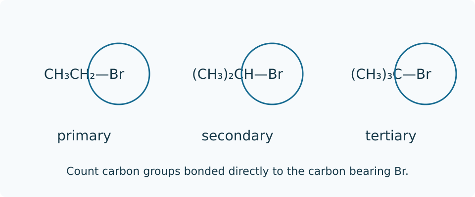
Primary, secondary and tertiary alkyl bromides differ in carbon neighbours at the carbon attached to Br.
Count the carbon neighbours of the carbon carrying the leaving group. Do not classify the whole molecule by total carbon count.
Partial bonds belong to a transition state
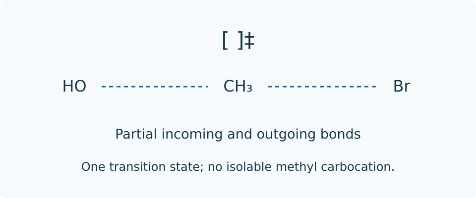
Partial bonds belong to a transition state
Read the dashed incoming/outgoing bonds. Explain why this is neither a stable five-bonded carbon nor a carbocation minimum.
Place this structure on the profile
Partial bonds belong to a transition state
Sketch a one-step energy curve and put the depicted structure at its maximum, not between two maxima.
Predict before the worked drawing
For methyl bromide plus hydroxide, draw a backside approach and two electron-pair arrows. Does a carbocation appear?
Change a concentration while keeping the model fixed
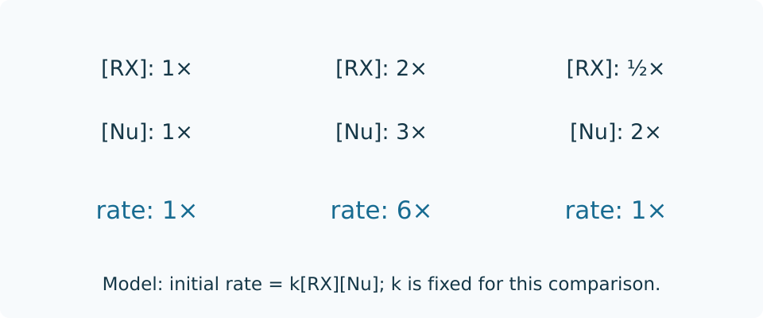
Change a concentration while keeping the model fixed
Calculate the factor for doubling[RX] and tripling[Nu]. Identify what “k fixed” assumes.
Find an offsetting concentration change
Change a concentration while keeping the model fixed
Explain why halving[RX] while doubling[Nu] gives the same initial rate in this model, without claiming equal yield.
Predict before the worked drawing
Use a tetrahedral model with Br, H, methyl and ethyl. Replace Br through backside attack. Predict what happens to the retained group arrangement.
Backside attack inverts local geometry
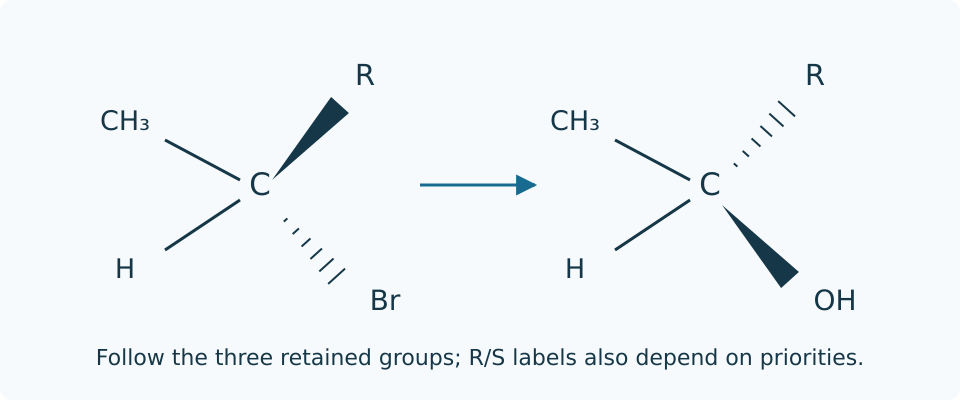
A schematic chiral carbon shows its retained group arrangement inverted when Br is replaced by OH.
SN2 gives inversion at the reacting tetrahedral carbon. Reassign priorities before stating a product R/S label.
Locate the ions on the energy path
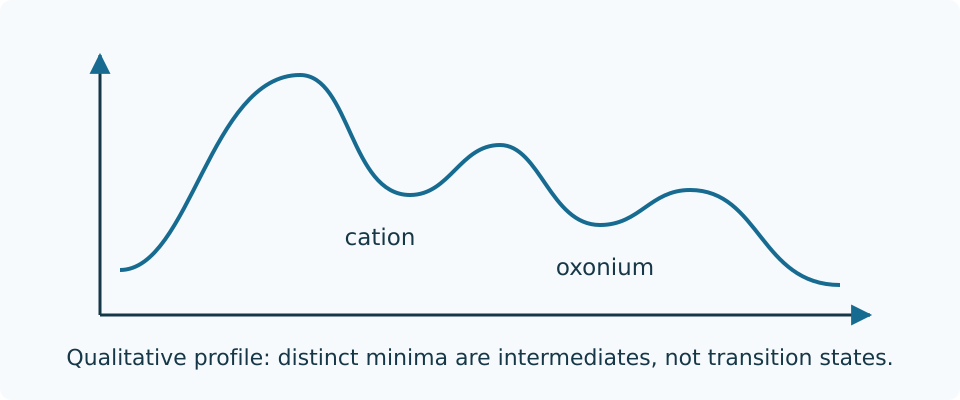
Locate the ions on the energy path
Name the two depicted minima after initial reactants. Which one exists before water has bonded to carbon?
Match steps to changes in charge location
Locate the ions on the energy path
Identify ionisation, capture and deprotonation. Where is the positive charge in each intermediate?
Predict before the worked drawing
Using rate=k[RX][Nu], predict the effect of doubling each concentration separately. What if both change?
Both collision partners affect the rate
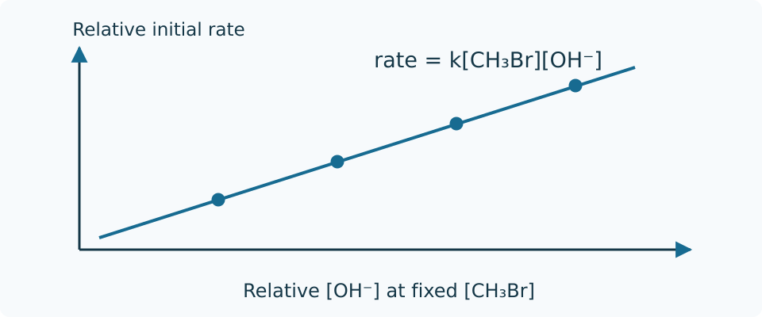
A schematic straight line shows initial SN2 rate proportional to nucleophile concentration at fixed substrate.
For this simple model: rate = k[substrate][nucleophile]. Doubling one concentration doubles initial rate when the other is fixed.
A neutral donor produces an ionic pair
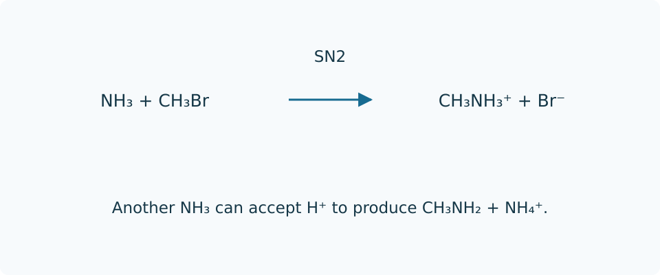
A neutral donor produces an ionic pair
Give nitrogen’s bond count immediately after methyl capture. Why is CH₃NH₂ premature?
Make the neutral amine by a real step
A neutral donor produces an ionic pair
Use NH₃ as base and draw methylammonium deprotonation, including NH₄⁺.
Predict before the worked drawing
Compare methyl, primary and tertiary centres. What geometric access does a strong nucleophile still need?
Crowding obstructs backside approach
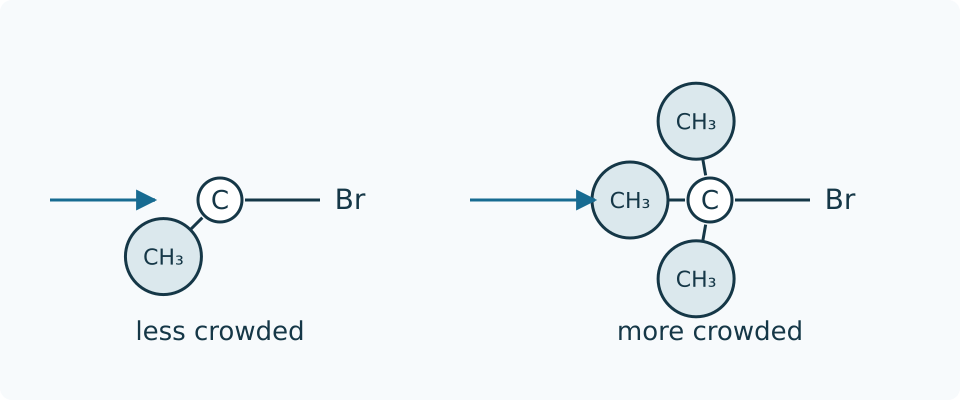
Substituent spheres illustrate less accessible attack at a more substituted saturated carbon.
Methyl and many primary substrates are accessible to SN2. Tertiary alkyl centres strongly obstruct the required approach.
Activation changes the departing species
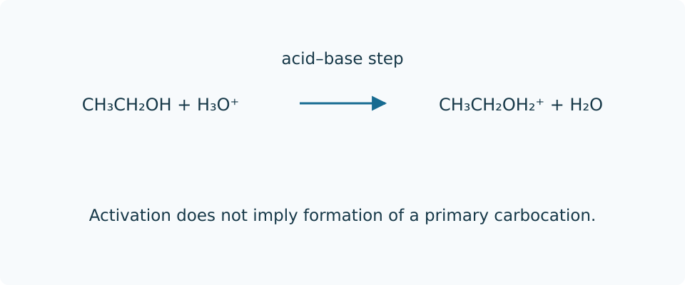
Activation changes the departing species
Compare loss of OH⁻ from a neutral alcohol with departure of water from oxonium.
Reject an unsupported primary carbocation
Activation changes the departing species
Does protonating ethanol prove an SN1 route? Explain why substrate stability still matters.
Predict before the worked drawing
Draw tertiary C–Br cleavage in water. Which species receives the pair? Which newly formed charged species needs stabilisation?
Use the SN2 pattern for a new bond
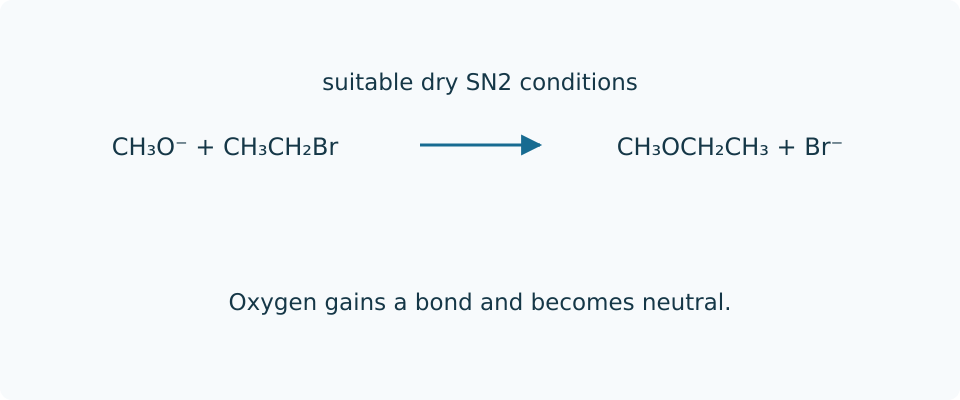
Use the SN2 pattern for a new bond
Mark the incoming oxygen and the substrate carbon that become bonded in ether formation.
Conserve valence and the negative charge
Use the SN2 pattern for a new bond
Count oxygen bonds before and after, then locate the remaining anionic species.
Predict before the worked drawing
Water attacks a carbocation through oxygen. Before removing any H, count the bonds at that oxygen and assign its charge.
Water can be a nucleophile
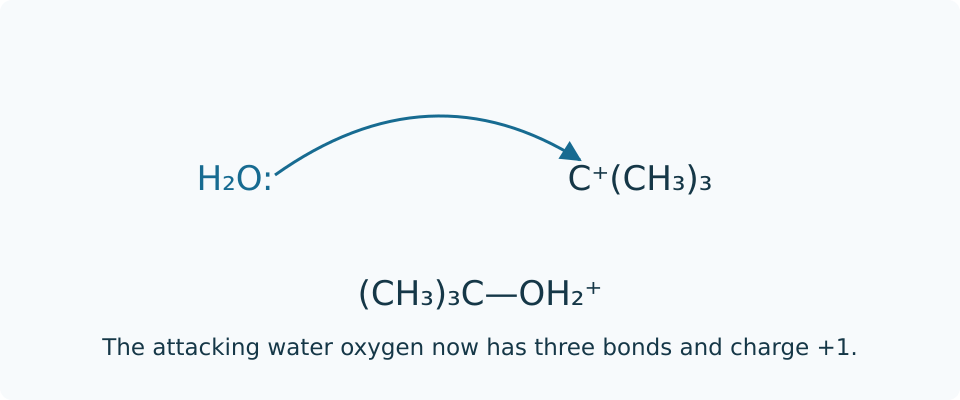
A water oxygen lone pair attacks a carbocation to give a protonated alcohol.
A neutral nucleophile can form a new bond. Here the attacking oxygen becomes positively charged.
Check the whole chosen branch
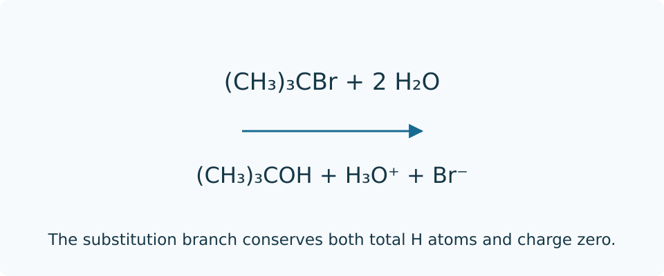
Check the whole chosen branch
Count both waters and every product H in the net tertiary aqueous substitution.
Keep a net equation separate from its mechanism
Check the whole chosen branch
Which intermediates are absent from the net equation, and why does it not establish the SN1/E1 product ratio?
Predict before the worked drawing
Draw the step that converts a three-bond oxonium oxygen to a two-bond neutral alcohol. Where does its proton go?
Finish the proton transfer
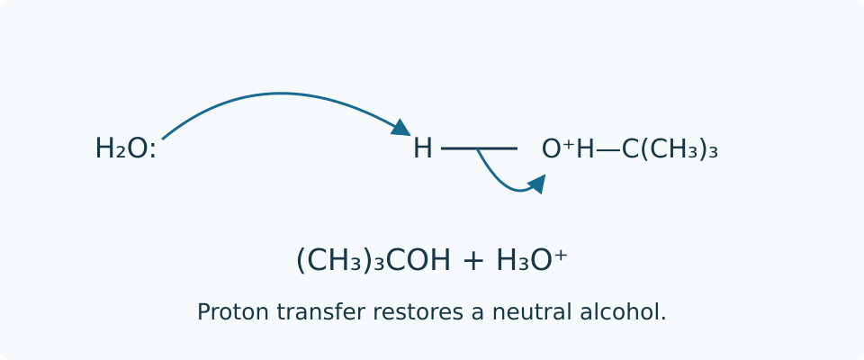
A second water molecule accepts H from the oxonium ion, giving alcohol and hydronium.
The neutral alcohol is produced by deprotonation, not by silently deleting H⁺.
Translate geometry into a descriptor carefully
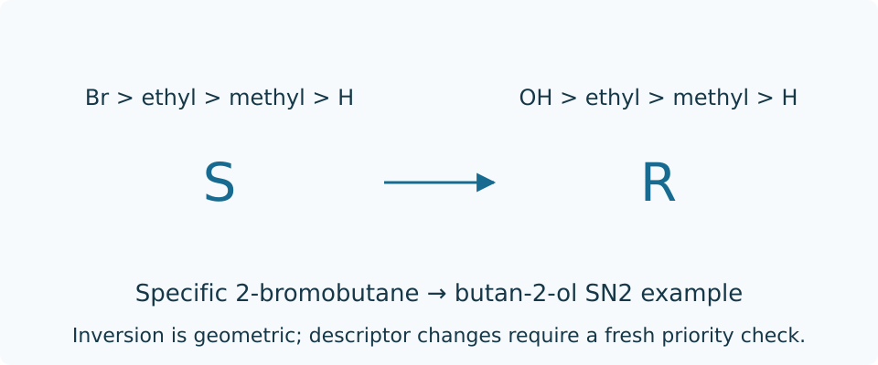
Translate geometry into a descriptor carefully
For(S)-2-bromobutane→butan-2-ol SN2, compare priority rankings before assigning the product.
Distinguish the general rule from this example
Translate geometry into a descriptor carefully
State what always follows from the SN2 geometry and what required this particular priority comparison.
Predict before the worked drawing
A planar carbocation is formed in an achiral medium. Where can a nucleophile approach relative to its three-bond plane?
A planar carbocation has two faces
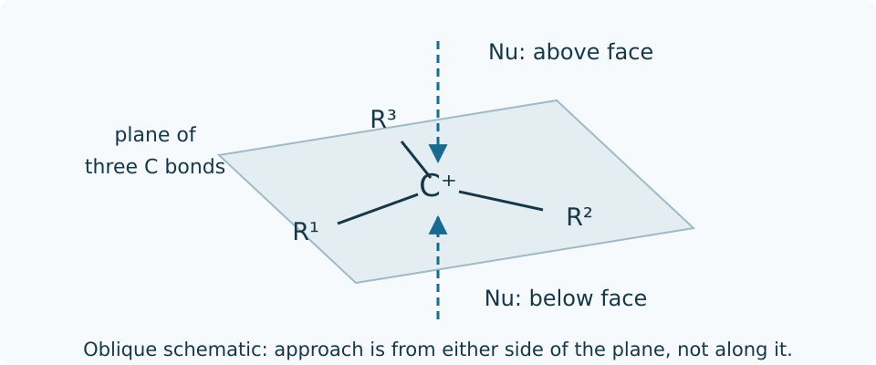
A planar carbocation permits nucleophilic approach from either face.
An achiral medium can give both configurations. Ion-pair effects may prevent an exactly racemic product.
Predict before the worked drawing
On a secondary bromide, mark the atom attacked in substitution and the atom attacked in beta elimination. Why is “strong reagent” insufficient?
Substitution is one possible outcome
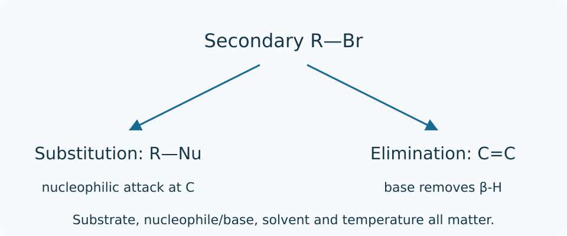
A secondary alkyl bromide can follow nucleophilic substitution or beta-proton elimination.
Compare substrate, leaving group, nucleophile/base, solvent and temperature. Conditions are part of the question.
Which conditions support each example?
Methyl bromide + hydroxide: accessible carbon and a strong pair donor support the SN2 model.
Tertiary bromide in water: ionisation can precede water capture, with elimination competing.
Neither is a universal rule for every solvent and temperature.
Leaving-group quality matters
A departing group must accommodate its electron pair. Bromide is a plausible leaving group; OH⁻ is poor under ordinary substitution conditions.
Protonating an alcohol can allow loss as water. Draw that activation step before using it.
Predict before checking
For CH₃Br + OH⁻, give the product, both curved arrows and net charge.
For (CH₃)₃CBr in water, draw ionisation, water capture and deprotonation. Name a competing outcome.
Use the same reasoning in practice
Complete the practice and worked examples, then the self-check.
Optional textbook support: selected Solomons chapter 6 sections. The reading guide explains the provisional book mapping.